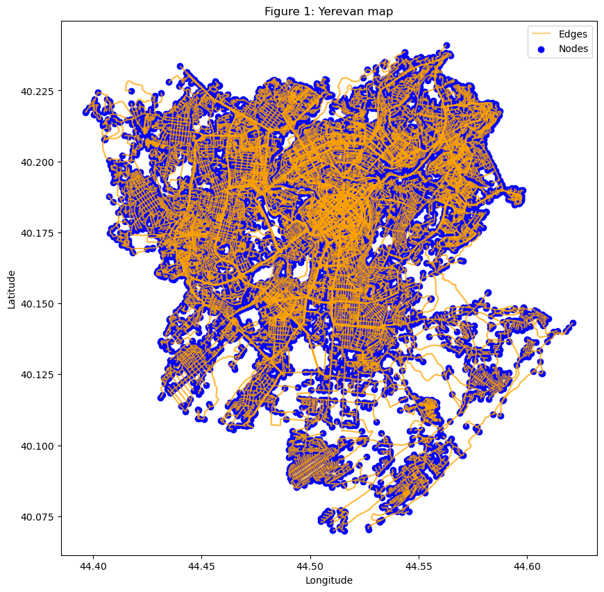
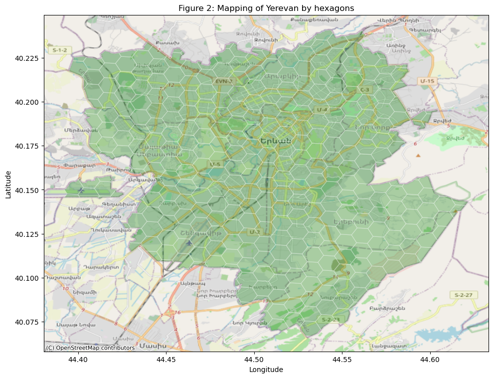
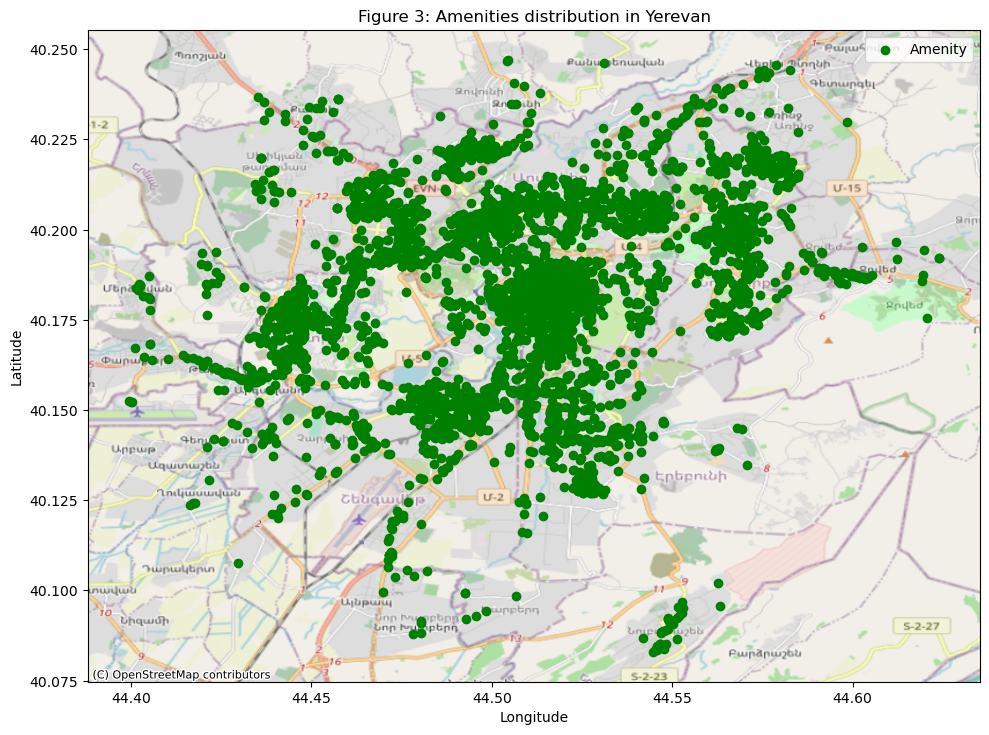
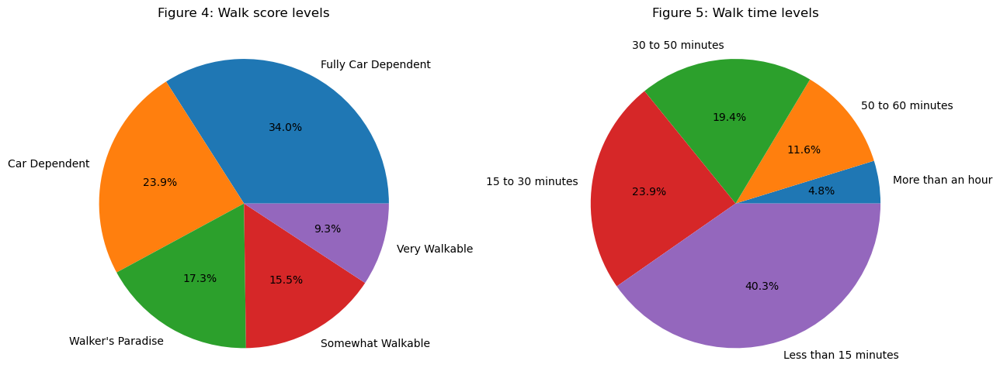
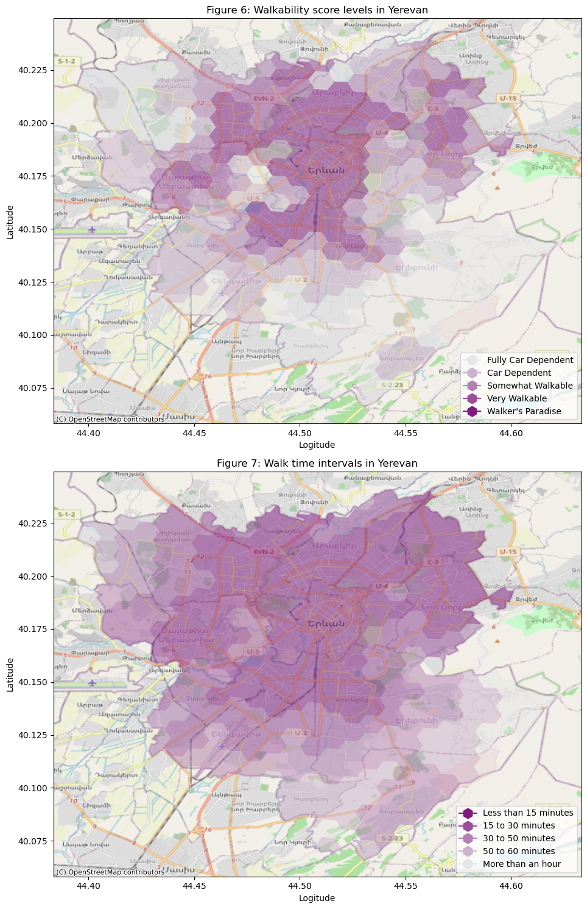
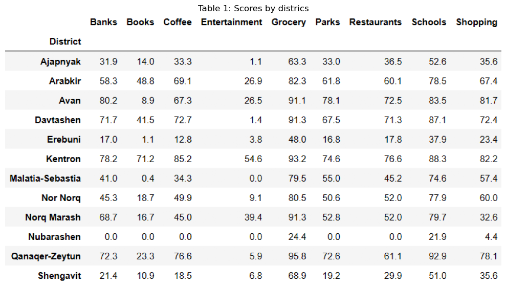
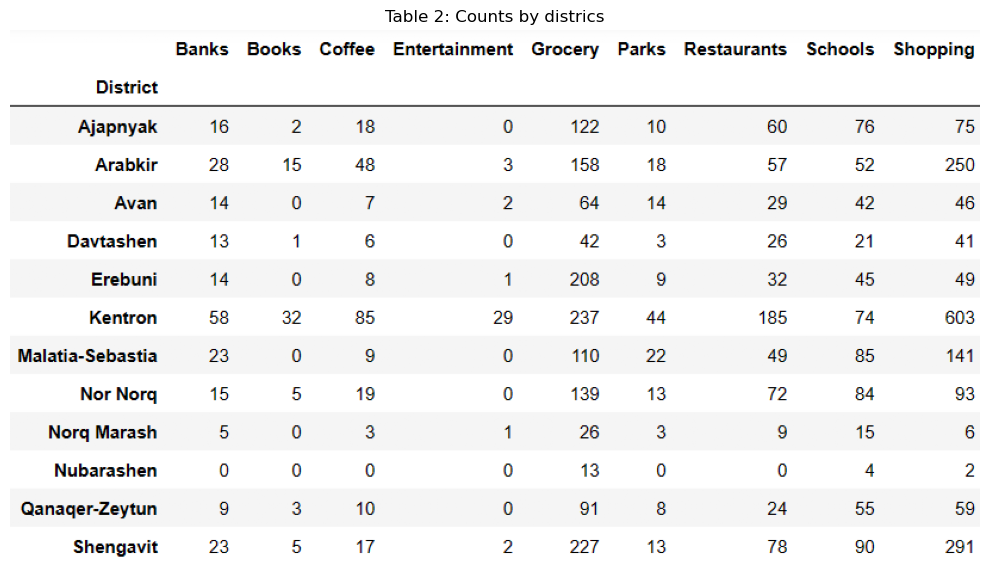

Introduction to walkablity score
A walkability score is a numerical rating or index that quantifies how pedestrian-friendly a specific location or neighborhood is. It assesses the ease with which residents and visitors can walk to various amenities, services, and destinations, without relying heavily on cars. Walkability scores are typically used to evaluate urban and suburban areas and help people make informed decisions about where to live, work, and play. According to walkscore.com, walk Score measures the walkability of any address using a patented system. For each address, Walk Score analyzes hundreds of walking routes to nearby amenities. Points are awarded based on the distance to amenities in each category. Amenities within a 5 minute walk (.25 miles or 402 meters ) are given maximum points. A decay function is used to give points to more distant amenities, with no points given after a 30 minute walk. The result of calcuation is (walk scrore) which is a number from 1 to 100, with 1 being the worst and 100 being the best. The levels of walkability score are the follwing:
- 1-24 - Car-Dependent: almost all errands require a car
- 25-49 - Car-Dependent: most errands require a car
- 50-69 - Somewhat Walkable: some errands can be accomplished on foot
- 70-89 - Very Walkable: most errands can be accomplished on foot
- 90-100 - Walker’s Paradise: daily errands do not require a car
Mapping of Yerevan for walk score calculation
To calculate the walk score for a given city, the city map (comprising nodes and edges) and the necessary amenities in that city are initially required. OpenStreetMap and Google Maps are commonly used as sources for both map data and amenity coordinates. The map used for calculations typically consists of nodes and edges. In OpenStreetMap, a node represents a point of interest on a map, defined by its latitude, longitude, and node ID. It can represent various features such as buildings, statues, or trees. Edges are pathways between nodes, allowing for the connection of nodes to each other.

Hexagonals
In the context of Walk Score, hexagonals refer to a geographic grid system that is used to calculate and represent the walkability of a neighborhood or area. Walk Score, a popular tool for assessing the walkability of a location, employs a hexagonal grid to analyze and score different areas.
Yerevan has been divided into 366 hexagonals, each covering approximately 0.66 square kilometers of area. The first step involves calculating the walk score for a single node, then combining it for a single hexagonal, and finally aggregating the scores for all hexagons in Yerevan.

Amenities
An amenity is a feature or facility that contributes to the convenience, comfort, or enjoyment of a place, location, or property. Amenities are typically considered positive attributes that enhance the quality of life or the functionality of a specific area. They can vary significantly depending on the context but are generally designed to fulfill the needs or desires of people.
Both OpenStreetMap and Google Maps provide information about amenities available at a given address or location, with slight technical differences in their data sources and presentation.
For Yerevan, both sources were utilized to obtain as many amenities as possible. In the calculation, 5511 out of the available 10274 amenities were included. The reason for this reduction in the number of amenities is based on the methodology used by walkscore.com, which typically selects nine specific amenities for a general assessment. For each amenity category, valid tags (types of amenities) supported by OpenStreetMap or Google Map were chosen. The following are the listed amenity categories and the types of objects included in each category:
- Grocery stores: Convenience, Supermarket, Grocery, Store, Grocery or supermarket
- Restaurants: Restaurant, Bar
- Shopping centers: Mall, Department store, Clothes, Fashion, Shoes, Furniture store, Electronics store, Pet store, Home goods store, Clothing store, Jewelry store, Book store, Shoe store, Bicycle store, Hardware store
- Coffee shops: Bar, Cafe
- Banks: Bank
- Parks: Park
- Schools: School, Secondary school, Primary school
- Libraries (books): Book store, Library
- Entertainment venues: Museum, Art gallery, Amusement park, Movie theater, Campground, Zoo
Please note that the specific categories and types of amenities may vary depending on the location, data sources and methodology.

Walk score calcuation
Distance Decay Function
The distance decay function determines what percentage of a full score a category will receive based on the distance between the address being examined, which we refer to as the origin, and an amenity’s location.Here a polynomial distance decay function is used that gives full score or near full score for amenities that are within 0.25 miles (402 meters) of the origin. After this, scores decrease with distance smoothly. At a distance of one mile, amenities receive only about 12% of the score they would have had if they were right next to the origin. After one mile, scores decrease less quickly with greater distance, until they reach 1.5 miles (2414 meter), after which they do not count towards the final score.
Besides the walk score, an urban planning concept is known as 15-minute city in which most daily necessities and services, such as work, shopping, education, healthcare, and leisure can be easily reached by a 15-minute walk or bike ride from any point in the city. Along with the walk score, walking time has also been calculated to determine if Yerevan fits into this concept or not.
The results of the calculations for both measures, divided into categories, are represented in the pie chart below. Only 40.% of Yerevan corresponds to the 15-minute city concept, and just 17.3% of Yerevan does not require a car for daily errands. These two are different approaches to walkability measures, so they cannot be directly compared.

The mapping of categories across Yerevan is displayed in the graphs below. As expected, the city center is the most pedestrian-friendly area, with the highest number of walkable hexagons.

The best result (for a single hexagon - 0.66 km square) is 99.8 with a 2.21-minute walking time and 325 amenities around that area, whose center is Tumanyan 17. Therefore, the best place for pedestrians is Tumanyan 17 and its surroundings. The Walk Score of 99.8 matches the score calculated bywalkscore.com for Yerevan (city center). The next three plots show the mapping of values for two measures (walk score and walk time) and the number of amenities for each hexagon across Yerevan.
Conclusion
To illustrate an image for each part (district) of Yerevan, there are two tables for both walk score and the count of amenities by districts. The calculation for each district were done by combining results for hexagons fitting the given district.

Based on the calculations using the provided data sources, ‘Ketron’ consistently garners the highest scores across nearly all categories, while ‘Nubarashen’ consistently yields the least favorable results for all categories. In the tables, all zeros indicate situations where the distance to a specific amenity exceeds 2414 meters. This threshold value is explicitly defined in the calculation methodology.
In some districts, the scores are notably low but not zero. This could be attributed to the absence of any objects for a specific category within the district’s boundaries. Nevertheless, the score is not recorded as zero because it accounts for instances where objects of that category may be present in neighboring districts, with the distance between those objects and the district in question falling below 2414 meters.

In the count table, the number of zeros is higher compared to the score table. This difference is due to the fact that the count values are calculated separately for each district, whereas the score incorporates neighboring districts into its calculation.As in the previous description, ‘Kentron’ and ‘Nubarashen’ still represent the districts with the best and worst results, respectively.
It’s important to note that all calculations are based on the predefined categories and their associated amenities. These zeros refer to the absence of objects with those specific tags. For instance, in the ‘Entertainment’ category, which combines amenities such as museums, art galleries, amusement parks, movie theaters, campgrounds, and zoos from both Google Maps and OpenStreetMap, a count of zero in Davtashen indicates the absence of objects in Davtashen specifically tagged with any of these types. However, it’s possible that other types of entertainment objects may exist in Davtashen. Therefore, all results are specific to the types of objects used, and any changes in the predefined parameters may alter the outcomes.